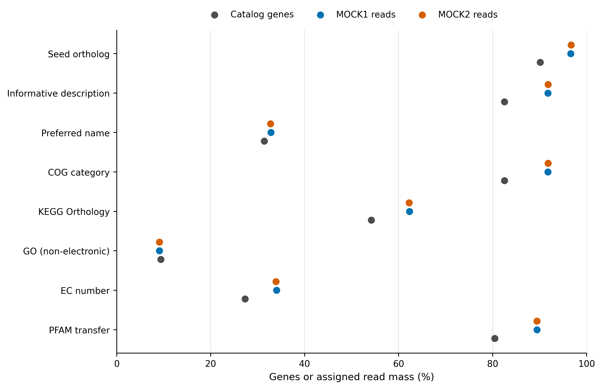
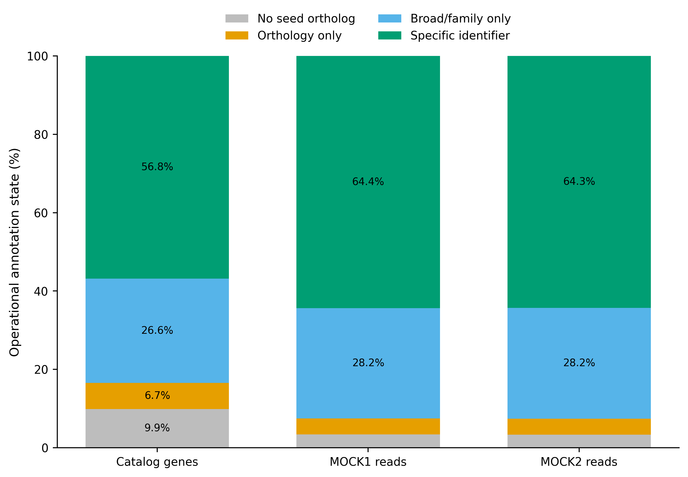
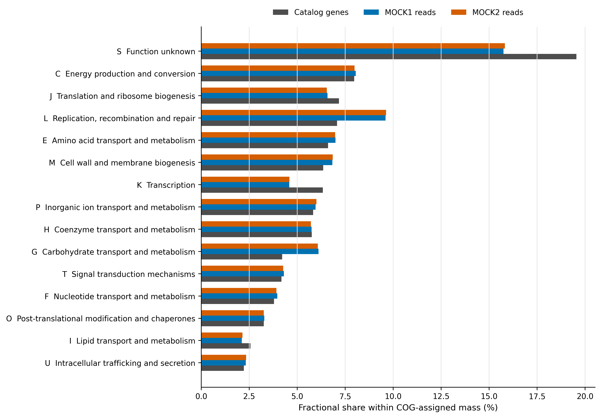
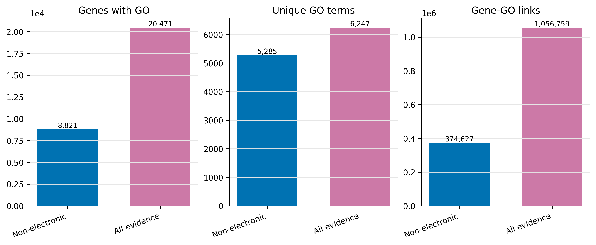

options(timeout = 600)
base_url <- "https://raw.githubusercontent.com/petemeng/metagenomics-best-practices/e219a2cd01609cc208a89e291cbd363ed7f2fbd8/"
files <- read.delim(paste0(base_url, "examples/36/files.tsv"))
for (i in seq_len(nrow(files))) {
path <- files$path[i]
dir.create(dirname(path), recursive = TRUE, showWarnings = FALSE)
if (!file.exists(path)) {
download.file(paste0(base_url, files$source[i]), path, mode = "wb")
}
}Gene-centric 功能注释：eggNOG-mapper 与功能暗物质
学习目标：从预测蛋白运行 eggNOG-mapper；分清 seed ortholog、COG category、KEGG Orthology（KO）与 Gene Ontology（GO）；建立未命中、仅有 orthology、仅有 broad/family label 与 specific identifier 的守恒账本；用 gene fraction 和 read-weighted fraction 两套分母报告功能暗物质。
真实数据：输入是 MEGAHIT individual/co-assembly 经 Prodigal 2.6.3 预测、再由 MMseqs2 9.d36de 以 95% amino-acid identity 与 95% target coverage 去冗余所得的 93,782 条代表蛋白。完整序列、长度、ORF completeness 与来源均来自 checksum-locked 的 Article 34 catalog；MOCK1/MOCK2 raw gene counts 来自 Article 35 的 audited read assignment。
结论边界：KO、GO、COG、EC、PFAM 和 description 都是依赖数据库与转移策略的预测标签。没有标签表示“本次模型没有给出该类标签”，不表示样本中没有该基因、通路或活性；有标签也不等于已用实验验证底物、方向、定位或表达。
提示先确定这一点
分别报告可注释比例与已注释功能组成；同源注释是功能推断，不是活性测量。
未注释基因，为什么不能从分母里消失？
锚定论文是 Delgado 与 Andersson 的 Baltic Sea gene catalogue 比较 (Delgado 和 Andersson 2022年)。原研究用 eggNOG-mapper 1.0.3、eggNOG 4.5.1 和 accelerated profile HMM search 注释 mix catalog；Table 3 报告 67,566,251 条基因中 21,593,598 条获得 EggNOG annotation，即 31.9591%。同一张表还把 complete、partial 与 incomplete ORFs 分开记录，而不是只给一个总命中率。
论文 Fig. 3b 展示的是“reads mapping to genes with Pfam annotation”，不是 EggNOG、KO 或 GO coverage。把 Fig. 3b 的 read-weighted Pfam 比例写成“EggNOG annotation rate”，会同时换掉 annotation source 与统计分母。
本文沿用 Table 3 的两个关键思想：
- catalog 中每条 protein 都必须进入 ledger，包括 no-hit；
- annotation missingness 必须按 ORF completeness 分层。
主分析升级为 eggNOG-mapper 2.1.15 + eggNOG 5.0.2 + DIAMOND 2.0.15。eggNOG-mapper v2 的 Fig. 1 将流程明确分成 sequence search、orthology inference、taxonomic-scope selection 和 annotation transfer 四步；不同输出字段覆盖不同，不应压成一个模糊的“annotated”布尔值 (Cantalapiedra 等 2021年; Huerta-Cepas 等 2019年)。

重要先给结论：先报告字段，再定义 annotated
84,511 条 proteins（90.11%）获得 seed ortholog，但只有 77,376 条（82.51%）带 COG category、50,800 条（54.17%）带 KO、8,821 条（9.41%）带 non-electronic GO；9,271 条（9.89%）没有 seed，另有 6,243 条（6.66%）只有 orthology evidence。“有 seed ortholog”只说明检出了可用于 orthology inference 的序列匹配；COG 提供 broad category，KO/GO/EC 提供另一层功能标识。Methods 和图注必须写出具体字段，不能只写“X% genes were annotated”。
下载本例数据与分析代码
数据与代码清单列出了本例的输入表、分析脚本和环境文件（约 27.7 MiB）。本清单不含原始 FASTQ 或大型数据库；是否需要它们取决于下文的分析起点。清单中的已计算结果仅供核对；读取结果表不等于重新运行统计模型或上游工具。
在新建文件夹中运行下面的 R 代码，下载完成后即可按正文中的相对路径读取文件。需要核验文件版本时，可使用带完整性检查的下载脚本。
先锁定输入、版本和算力边界
算力门槛
| 项目 | 本次 93,782-protein 重算 | 真实大型 catalog 建议 |
|---|---|---|
| CPU | 32 cores | 32–64 cores；按节点限额设置 --cpu |
| RAM | 主分支实测峰值 7.14 GiB | 预留 32–64 GB；--dbmem 需远高于此 |
| 磁盘 | eggNOG installed 51.9 GB；archives 12.1 GB；work 0.12 GiB | 至少 80 GB；保留多版本时按版本独立规划 |
| 耗时 | main 11:58.62；GO all-evidence 1:09.89 | 与 query 数、backend、sensitivity、存储吞吐共同变化 |
没有服务器时，直接读取 data/small/36-eggnog-functional-annotation-frozen/ 中的 complete annotation rows、KO/GO/COG summaries、resource logs 与 four-state ledger。只上传少量 proteins 到 web server 适合检查格式，不适合估计完整 catalog 的 annotation rate。
环境配置与完整运行说明
mamba create -n metagenome-eggnog-2026.07 \
--file env/eggnog-annotation-linux-64.lock
EGGNOG_ENV="$HOME/miniconda3/envs/metagenome-eggnog-2026.07"
DB_ROOT="/absolute/path/eggnog-5.0.2"
env PATH="${EGGNOG_ENV}/bin:/usr/bin:/bin" \
"${EGGNOG_ENV}/bin/emapper.py" --version --data_dir "${DB_ROOT}"预期版本行同时包含 emapper-2.1.15、Installed eggNOG DB version: 5.0.2 和 diamond version 2.0.15。只运行 emapper.py --version 而不传 --data_dir，会检查默认空目录，不能证明目标数据库可用。
# 约 12.1 GB compressed；安装后约 51.9 GB；支持断点续传并强制 SHA-256
bash scripts/bootstrap_article36_eggnog_database.sh list
bash scripts/bootstrap_article36_eggnog_database.sh download \
--database-dir "${DB_ROOT}"
bash scripts/bootstrap_article36_eggnog_database.sh audit \
--database-dir "${DB_ROOT}"database-manifest.tsv 锁定 eggNOG 5.0.2 的 eggnog.db、taxonomy SQLite/traversal cache 与 DIAMOND index。工具官方 downloader 使用 release-specific HTTP URL；下载脚本因此把 byte count 与 SHA-256 设为硬门禁，而不是把传输成功当作文件身份。
install.packages(c("ggplot2", "dplyr", "readr", "tidyr", "forcats", "scales", "patchwork"))
library(ggplot2)
library(dplyr)
library(readr)
library(tidyr)
library(forcats)
set.seed(20260736)
pal_pub <- c(
`Catalog genes` = "#4D4D4D", `MOCK1 reads` = "#0072B2",
`MOCK2 reads` = "#D55E00", `No seed ortholog` = "#BDBDBD",
`Orthology only` = "#E69F00", `Broad/family only` = "#56B4E9",
`Specific identifier` = "#009E73", `Non-electronic` = "#0072B2",
`All evidence` = "#CC79A7"
)
scale_color_pub <- function(...) scale_color_manual(values = pal_pub, ...)
scale_fill_pub <- function(...) scale_fill_manual(values = pal_pub, ...)
theme_pub <- function(base_size = 12) {
theme_bw(base_size = base_size) +
theme(
panel.grid.minor = element_blank(),
panel.grid.major.y = element_blank(),
axis.text = element_text(color = "black"),
strip.background = element_rect(fill = "#EEF3F5", color = NA),
legend.key = element_blank(),
plot.title.position = "plot"
)
}
save_pub <- function(plot, file_base, width = 180, height = 120,
units = "mm", dpi = 350) {
dir.create(dirname(file_base), recursive = TRUE, showWarnings = FALSE)
ggsave(paste0(file_base, ".pdf"), plot, width = width, height = height,
units = units, device = cairo_pdf)
ggsave(paste0(file_base, ".png"), plot, width = width, height = height,
units = units, dpi = dpi, bg = "white")
ggsave(paste0(file_base, ".tiff"), plot, width = width, height = height,
units = units, dpi = dpi, compression = "lzw", bg = "white")
invisible(plot)
}输入身份与分析约定
| Asset | Rows/sequences | Identity gate | Role |
|---|---|---|---|
megahit-mix-primary.faa.gz |
93,782 proteins | SHA-256 3db88f…a3569 |
eggNOG queries |
| representative metadata | 93,782 genes | SHA-256 677479…c09 |
length/completeness strata |
| Article 35 abundance | 187,564 gene × sample rows | SHA-256 8dc7ea…36b |
read-weighted missingness |
| eggNOG annotation SQLite | release 5.0.2 | 41,370,988,544 bytes + SHA-256 | orthology/function transfer |
| eggNOG DIAMOND index | release 5.0.2 | 9,285,439,161 bytes + SHA-256 | seed search |
FAA、metadata 和每个样本的 abundance IDs 必须都是相同的 93,782 个 unique IDs。MOCK1/MOCK2 的 raw counts 分别闭合到 2,784,234 与 2,777,443 assigned reads；它们只用于技术性的 read-weighted missingness，不是生物学重复。
准备输入并通过身份检查
ROOT="$PWD"
WORK="data/raw/article36/work"
EGGNOG_ENV="$HOME/miniconda3/envs/metagenome-eggnog-2026.07"
DB_ROOT="/absolute/path/eggnog-5.0.2"
export PYTHONHASHSEED=0 PYTHONNOUSERSITE=1 PYTHONPATH=
python3 scripts/prepare_article36_eggnog_inputs.py \
--project-root "${ROOT}" \
--work-dir "${WORK}" \
--database-dir "${DB_ROOT}" \
--env-prefix "${EGGNOG_ENV}"准备器解压真实 FAA、核对 93,782 个 IDs、ORF completeness、两套 raw-count ledgers、四个 database files 与 SQLite release。--skip-large-hash 只供开发诊断；正式运行不得用它生成 provenance。
检查 1：历史比例不能跨版本直接横比
Delgado 与 Andersson 使用 eggNOG-mapper 1.0.3 + eggNOG 4.5.1 + HMM；本次使用 mapper 2.1.15 + eggNOG 5.0.2 + DIAMOND。eggNOG-mapper v2 的参考物种、orthologous groups、annotation sources 和推断引擎均已更新 (Cantalapiedra 等 2021年)。31.9591% 是论文 catalog 在历史模型下的结果，不是本次 93,782-protein mock catalog 的“预期真值”。
截至 2026-07-28，官方仓库把 v3 标为 heavy testing，并明确建议 production 使用 stable v2.1.15；v3 面向 eggNOG v7，v2/v3 databases 不可互换。因此本次不把未正式发布的 v3 结果混入主分析。
检查 2：backend 是方法的一部分
原文为 profile HMM；eggNOG-mapper v2 支持 DIAMOND、MMseqs2 与 HMMER。官方 benchmark 指出，DIAMOND 默认在速度与内存间平衡较好，而约 100,000 queries 以内 MMseqs2 可能更快；HMM 可找更远同源，但更慢且需额外 database (Cantalapiedra 等 2021年)。Methods 必须写 backend、sensitivity 和 iterate，不能只写软件名。
检查 3：mixed metagenome 不应默认强制 Bacteria
--tax_scope auto 为 mixed metagenomic data 选择适配 seed lineage 的 scope。把 catalog 强制为 Bacteria 可能丢掉 archaeal、eukaryotic 或 viral queries；反过来，研究对象若已由可靠 taxonomy 限定为某 clade，固定 scope 可减少不合适的 donor。scope 选择应来自研究设计，而不是为了提高命中率。
检查 4：partial ORF 的 missingness 要单独报告
complete、partial、incomplete ORFs 的长度与边界质量不同。对 partial ORF 得到 KO 不代表已恢复全长 catalytic architecture；对 partial ORF 无 hit 也可能只是 assembly truncation。completeness-annotation-summary.tsv 与 length-annotation-summary.tsv 同时保留两种分层，避免把 assembly quality 写成“novel biology”。
检查 9：database files 与 mapper 一起构成模型版本
eggnog.db、taxonomy files 和 DIAMOND index 必须来自同一 5.0.2 release。只记录 “eggNOG v5” 不够；本次 manifest 记录 release-specific URL、compressed/installed bytes 与 SHA-256，并由 SQLite version table 再确认 release。
运行主注释
env PATH="${EGGNOG_ENV}/bin:/usr/bin:/bin" \
"${EGGNOG_ENV}/bin/emapper.py" \
-i "${WORK}/inputs/catalog.faa" \
--itype proteins \
-m diamond \
--sensmode sensitive \
--dmnd_iterate yes \
--outfmt_short \
--evalue 0.001 \
--seed_ortholog_evalue 0.001 \
--tax_scope auto \
--tax_scope_mode inner_narrowest \
--target_orthologs all \
--go_evidence non-electronic \
--pfam_realign none \
--md5 \
--cpu 32 \
--data_dir "${DB_ROOT}" \
-o catalog-main \
--output_dir "${WORK}/annotation/main" \
--override--outfmt_short 只缩短 DIAMOND intermediate hits，因为本次没有 pident/query_cover/subject_cover filters；最终 .emapper.annotations 仍保留完整字段。对 metagenomic partial ORFs 强制 high subject coverage 会系统性惩罚截短 query，所以本次不把 coverage threshold 偷渡进“未注释”定义。
重要一次性真实重算入口
下面的 runner 用 /usr/bin/time -v 记录峰值 RAM、wall time、I/O 与退出码，并在主搜索结束后自动完成 GO all-evidence sensitivity：
python3 scripts/run_article36_eggnog_annotation.py \
--project-root "${ROOT}" \
--work-dir "${WORK}" \
--database-dir "${DB_ROOT}" \
--env-prefix "${EGGNOG_ENV}" \
--cpu 32检查 6：PFAM transfer 不等于 de novo domain confirmation
--pfam_realign none 使用 ortholog-derived PFAM transfer，计算快，但不是 query 对 PFAM HMM 的直接支持。关键 candidate 若依赖 domain architecture，应另跑 --pfam_realign realign/denovo 或独立 InterProScan/HMMER，并保留 GA thresholds 与 domain coordinates。
注意只读取 .emapper.annotations，再把行数当分母
该文件通常不含 no-hit queries。应以原始 FAA IDs 左连接 annotation，并验证四类总和等于 93,782。
注意为了提高 GO coverage，把 all-evidence 当主结果
electronic evidence 扩大覆盖，但不自动提高可信度。主分析、sensitivity 与差值要分开标注。
注意把 transferred PFAM 当成 query-level HMM confirmation
关键 domain 应 realign 或 de novo search，并审计 domain coordinates、coverage 和 clan overlap。
同一 seed hits 检查 GO evidence policy
Seed ortholog 是入口，不是终点
eggNOG-mapper 先把 query protein 搜索到 eggNOG reference protein，得到 seed ortholog；随后依据该 seed 所在的 orthologous groups、物种树和 taxonomic scope 选择 donor，再转移功能标签 (Huerta-Cepas 等 2017年; Cantalapiedra 等 2021年)。
可把一条 query 的证据链写成：
\[ q \xrightarrow{\text{sequence search}} s \xrightarrow{\text{orthology inference}} O_q \xrightarrow{\text{taxonomic scope}} D_q \xrightarrow{\text{transfer}} A_q, \]
其中 \(s\) 是 seed ortholog，\(O_q\) 是候选 ortholog 集，\(D_q\) 是允许作为 donor 的集合，\(A_q\) 才是最终转移的 annotation terms。只保存 seed_ortholog 会丢掉功能字段；只保存最终 KO 又会丢掉匹配质量、转移层级和 missingness。
功能暗物质必须先写 operational definition
“功能暗物质”不是数据库里的固定字段。本文把 93,782 条 proteins 分成四个互斥状态：
- No seed ortholog：DIAMOND/eggNOG 5.0.2 没有通过 E-value gate 的 seed；
- Orthology only：有 seed，但没有 informative description、preferred name、COG、KO、GO、EC 或 PFAM；
- Broad/family only：有 informative description、COG 或 PFAM，但没有 KO、GO、EC 或 preferred name；
- Specific identifier：至少有 KO、GO、EC 或 preferred name。
设四类 gene counts 为 \(n_k\)，则必须满足：
\[ \sum_{k=1}^{4} n_k=N_{catalog}=93{,}782. \]
这是可审计的 missingness 分层，不是“未知功能基因”的自然定律。改数据库、版本、taxonomic scope 或 state definition，比例都会改变。
env PATH="${EGGNOG_ENV}/bin:/usr/bin:/bin" \
"${EGGNOG_ENV}/bin/emapper.py" \
-m no_search \
--annotate_hits_table \
"${WORK}/annotation/main/catalog-main.emapper.seed_orthologs" \
--seed_ortholog_evalue 0.001 \
--tax_scope auto \
--tax_scope_mode inner_narrowest \
--target_orthologs all \
--go_evidence all \
--pfam_realign none \
--cpu 8 \
--data_dir "${DB_ROOT}" \
-o catalog-go-all \
--output_dir "${WORK}/annotation/go-all" \
--override这条 sensitivity 不重新搜索 protein database；两个分支共享完全相同的 seed orthologs，差异只来自 GO evidence policy。主结果仍是 non-electronic。
检查 5：GO evidence policy 不能藏在默认参数里
non-electronic 主策略覆盖 8,821 条 genes、5,285 个 unique GO terms 和 374,627 个 gene–GO links；在完全相同的 84,511 条 seed hits 上，all-evidence 分支扩大到 20,471 条 genes、6,247 个 terms 和 1,056,759 个 links，分别增加 11,650 条 covered genes、962 个 terms 与 682,132 个 links。all-evidence 只作为 sensitivity；这类增加应写成 evidence-policy expansion，不应写成发现了新的 genes。
注意把 seed ortholog 写成 experimentally validated function
seed 是 orthology inference 的入口。必须继续报告转移了哪个字段、使用什么 scope/evidence policy；实验验证需要独立证据。
把 no-hit 补回 catalog
Gene fraction 与 read-weighted fraction 回答不同问题
catalog fraction 为：
\[ p_k^{gene}=\frac{n_k}{N_{catalog}}. \]
对样本 \(s\)，以 Article 35 的 assigned raw read counts \(c_{gs}\) 加权：
\[ p_{ks}^{read}=\frac{\sum_{g\in k}c_{gs}}{\sum_g c_{gs}}. \]
前者回答“目录里有多少 proteins 落入该状态”，后者回答“已分配到目录的 read mass 中有多少落入该状态”。read-weighted fraction 仍是相对量，不是 microbial load、transcription 或 enzyme activity。

eggNOG-mapper .annotations 只列出通过 seed gate 的 queries。若直接读取该文件计算比例，分母已经偷偷变成 hit genes。汇总器以完整 catalog ID set 左连接 annotations：
python3 scripts/summarize_article36_eggnog_annotation.py \
--project-root "${ROOT}" \
--work-dir "${WORK}"
gzip -cd "${WORK}/summary/gene-functional-annotation.tsv.gz" | \
sed -n '1,6p'GeneID Completeness AaLength SeedOrtholog COGCategory KEGGKO AnnotationState
megahit-co__c000001_1 Partial 240 103690.17129790 M ko:K02005 Specific identifier
megahit-co__c000002_1 Incomplete 335 103690.17130193 G ko:K01191 Specific identifier
megahit-co__c000003_1 Partial 95 273121.WS0130 EG ko:K01687 Specific identifier
megahit-co__c000003_2 Partial 197 273121.WS0129 S ko:K07084 Specific identifier
megahit-co__c000004_1 Incomplete 658 216595.PFLU_4357 - - Orthology only完整表保留 93,782 行，并为每条 gene 记录 HasCOG/HasKO/HasGO/HasEC/HasPFAM、MOCK1/MOCK2 raw counts 与四级 AnnotationState。不要在电子表格里手工删掉 - 行。
检查 7：functional label 是 prediction，不是 activity
KO/EC 支持的是潜在 biochemical capability。要声称 pathway complete，需要检查必要反应集合；要声称 active，需要 metatranscriptome、metaproteome、metabolite turnover 或实验验证。gene abundance 不能替代这些证据层。
注意把 eggNOG 4.5、5.0 与 7 的比例直接比较
数据库内容和引擎已改变；v2 与 v3 databases 也不可互换。跨版本差异既含 biology，也含 model version。
保存一次性结果
COG、KO 与 GO 不是三个同义词
| Field | 主要回答 | 粒度 | 常见多值来源 | 不能单独证明 |
|---|---|---|---|---|
| COG category | 属于哪类 broad cellular function | 字母级大类 | 一条 protein 跨多个 broad roles | 精确反应或底物 |
| KEGG Orthology | 对应哪个 functional ortholog identifier | 常较具体 | 多结构域、多功能或 donor 集 | 通路在样本中完整、活跃 |
| Gene Ontology | 支持哪些 molecular function / biological process / cellular component terms | 层级 ontology | 父子 terms 与多个证据来源 | 实验条件下的功能和方向 |
| EC | 是否可转移 enzyme classification | 反应分类 | 多活性 enzyme | 反应确在样本内发生 |
| PFAM | 是否转移 protein-family/domain label | 结构域/家族 | 多结构域 protein | 全长 protein 的完整功能 |
GO terms 带有 evidence provenance；eggNOG-mapper 的 --go_evidence non-electronic 排除 electronic-only transfer，而 all 会扩大覆盖 (The Gene Ontology Consortium 2019年)。扩大 term 数不等于精度提高，因此本次把 non-electronic 定为主结果，把 all-evidence 作为 sensitivity analysis。
多标签汇总必须守恒
若 gene \(g\) 有 \(m_g\) 个 COG categories，把完整的一个 gene 复制到每个 category，会令总量膨胀。主汇总采用 fractional allocation：
\[ w_{gk}=\frac{1}{m_g},\qquad \sum_{k\in C_g}w_{gk}=1. \]
KO 与 GO 的 top-term 表同样保留 GenesWithTerm 与 FractionalGeneEquivalent 两列：前者适合描述 overlap，后者用于画组成图。两者不能混称为“gene abundance”。
python3 scripts/freeze_article36_eggnog_annotation.py \
--project-root "${ROOT}" \
--work-dir "${WORK}" \
--output-dir data/small/36-eggnog-functional-annotation-frozen
python3 scripts/validate_article36_eggnog_annotation.py \
--project-root "${ROOT}" \
--frozen-dir data/small/36-eggnog-functional-annotation-frozen \
--output-dir results/36-eggnog-functional-annotation \
--figure-dir figures \
--chapter chapters/36-eggnog-functional-annotation.qmd冻结包保留 complete main/all-evidence annotation rows、seed orthologs、gene-level ledger、KO/GO/COG summaries、commands、resource logs、environment locks 和 database manifest；约 51.9 GB database 与 raw DIAMOND hits 不进入 Git。
检查 8：多标签有 overlap，不得静默复制总量
COG composition 图采用 1/m fractional allocation；term prevalence 表保留完整的 genes-with-term overlap。若研究问题允许同一 gene 同时计入多个 mechanisms，可以报告 copied counts，但必须同时报告 expansion factor，不能把膨胀后的总和解释成新增 genes 或 reads。
注意把 COG、KO、GO 三列合并成一个 annotated 布尔值
三者粒度和语义不同。至少分别报告 coverage；若定义综合状态，必须把布尔规则写进 Methods。
注意一个 multi-label gene 在每个 COG/KO/GO 中复制完整 abundance
复制会膨胀总量。组成图用 fractional allocation；overlap 分析则保留 copied membership，并明确二者的统计含义。
注意用两个 mocks 的 read-weighted 差异做生态学推断
两套 mocks 是技术校准材料，且参与了 catalog construction。它们不能提供 population variance、condition effect 或外部验证。
交代功能字段、数据库和未注释比例
Methods template
Protein-coding sequences were obtained from the checksum-identified 93,782-gene nonredundant catalog. Functional annotation was performed with eggNOG-mapper v2.1.15 against eggNOG v5.0.2 using DIAMOND v2.0.15 in sensitive iterative mode (
--sensmode sensitive --dmnd_iterate yes; E-value and seed-ortholog E-value, 1 × 10^-3). Annotation transfer used the automatic taxonomic scope with the inner-narrowest scope rule and all ortholog types. Non-electronic GO evidence was retained for the primary analysis; an all-evidence reannotation of the identical seed-ortholog table was used as a sensitivity analysis. PFAM labels were transferred from orthologs without query-level realignment. Queries absent from the eggNOG-mapper annotation table were restored from the complete catalog ID set. Annotation missingness was partitioned into no seed ortholog, orthology only, broad/family only, and specific identifier states. Multi-label COG, KO, and GO summaries used equal fractional allocation for compositional plots. Database release, installed file sizes, SHA-256 checksums, commands, and peak resource use were recorded.
若你改用 MMseqs2/HMMER、固定 taxonomic scope、加入 identity/coverage filter、启用 pfam_realign 或把 go_evidence 改为 experimental，必须同步替换模板中的 backend、参数、database files 与 primary/sensitivity 定义。
换到自己的研究中，先检查哪些条件？
你至少需要什么
- 一份 amino-acid FASTA；每条 header 的第一个 token 必须是 unique stable gene ID；
- protein catalog 的生成方法、聚类阈值与版本；
- database 的 release-specific files、bytes 与 checksums；
- 若要分层 missingness：ORF completeness、protein length、contig/MAG origin；
- 若要 abundance weighting：与 FASTA 使用同一 gene IDs 的 raw-count table；
- 若要比较组间功能：足够的 biological replicates、covariates 与独立统计设计。
最短迁移路线
- 用
seqkit stats与 ID uniqueness gate 检查 FAA； - 明确样本可能包含 Bacteria、Archaea、Eukaryota 或 viruses，再决定
tax_scope； - 先跑一个 100–1,000-protein format smoke；小 query 可用
--dmnd_algo ctg，不能把其耗时外推到 full catalog； - full run 固定 mapper、backend、database、sensitivity、E-value、scope、GO evidence 与 PFAM policy；
- 以完整 FAA IDs 左连接
.emapper.annotations，保留 no-hit； - 分别汇总 COG、KO、GO、EC、PFAM 与 operational dark-matter states；
- multi-label term table同时保存 genes-with-term 与 fractional mass；
- 用独立 database/domain search 验证决定论文结论的 candidate functions；
- 冻结 compact outputs、commands、logs、checksums 与 Methods contract。
提示最值得加入 CI 的六个断言
FASTA unique IDs = annotation rows after left join；four states sum to catalog size；state raw reads sum to assigned reads per sample；non-electronic GO terms are a subset of all-evidence terms；fractional COG mass does not inflate；database release and SHA-256 match the Methods contract。
图中应该保留哪些信息？
字段 coverage
field-coverage-summary.tsv 把每个字段的 gene fraction、MOCK1 read fraction 与 MOCK2 read fraction并排。点图比堆叠图更适合比较同一 field 的三个分母；x 轴统一为 0–100%。
四级暗物质 ledger
四类互斥状态用 100% stacked bars，三根柱分别代表 catalog genes、MOCK1 assigned reads 与 MOCK2 assigned reads。每根柱必须闭合到 100%，图例顺序从 no seed 到 specific identifier。
COG composition

frozen <- "data/small/36-eggnog-functional-annotation-frozen"
cog_all <- read_tsv(file.path(frozen, "cog-category-summary.tsv"), show_col_types = FALSE) |>
filter(FractionalGeneEquivalent > 0) |>
mutate(Label = paste(COGCategory, Description))
top_labels <- cog_all |>
slice_max(FractionalGeneEquivalent, n = 15) |>
pull(Label)
cog <- cog_all |>
pivot_longer(
c(FractionalGeneEquivalent, MOCK1FractionalRawReads, MOCK2FractionalRawReads),
names_to = "Denominator", values_to = "Mass"
) |>
group_by(Denominator) |>
mutate(Share = 100 * Mass / sum(Mass)) |>
ungroup() |>
filter(Label %in% top_labels) |>
mutate(
Denominator = recode(
Denominator,
FractionalGeneEquivalent = "Catalog genes",
MOCK1FractionalRawReads = "MOCK1 reads",
MOCK2FractionalRawReads = "MOCK2 reads"
),
Label = fct_reorder(Label, Share, .fun = max)
)
p_cog <- ggplot(cog, aes(Share, Label, fill = Denominator)) +
geom_col(position = position_dodge(width = 0.75), width = 0.68) +
scale_fill_pub() +
labs(x = "Fractional share within COG-assigned mass (%)", y = NULL) +
theme_pub() +
theme(legend.position = "top")
save_pub(p_cog, "figures/36-cog-category-profile", width = 245, height = 175)归一化分母使用全部 observed COG categories；top_labels 只控制展示类别，不改变分母。
GO evidence sensitivity

go_audit <- read_tsv(file.path(frozen, "go-evidence-audit.tsv"), show_col_types = FALSE) |>
filter(Metric %in% c("Genes with >=1 GO term", "Unique GO terms", "Gene-GO links")) |>
pivot_longer(c(NonElectronic, AllEvidence), names_to = "Policy", values_to = "Count") |>
mutate(
Policy = recode(Policy, NonElectronic = "Non-electronic", AllEvidence = "All evidence"),
Metric = recode(Metric, `Genes with >=1 GO term` = "Genes with GO")
)
p_go <- ggplot(go_audit, aes(Policy, Count, fill = Policy)) +
geom_col(width = 0.68) +
geom_text(aes(label = scales::comma(Count)), vjust = -0.25, size = 3) +
facet_wrap(~Metric, scales = "free_y", nrow = 1) +
scale_fill_pub(guide = "none") +
labs(x = NULL, y = "Count") +
theme_pub()
save_pub(p_go, "figures/36-go-evidence-policy", width = 235, height = 100)所有图内文字保持英文；PDF 用于矢量排版，PNG 与 LZW TIFF 以 350 dpi 导出。长 COG descriptions 采用横向布局，并给左侧留足空间，避免截断。
回到最初的问题
一个 seed ortholog 不等于一个已证实功能。本文用 eggNOG-mapper 2.1.15 与 eggNOG 5.0.2 实跑 93,782 条真实 catalog proteins，分别审计 seed、COG、KO、GO、EC、PFAM、四级功能暗物质和 GO evidence policy。
参考文献
- Delgado, L. F., & Andersson, A. F. (2022). Evaluating metagenomic assembly approaches for biome-specific gene catalogues. Microbiome. https://doi.org/10.1186/s40168-022-01259-2
- Cantalapiedra, C. P., et al. (2021). eggNOG-mapper v2: Functional annotation, orthology assignments, and domain prediction at the metagenomic scale. Molecular Biology and Evolution. https://doi.org/10.1093/molbev/msab293
- Huerta-Cepas, J., et al. (2019). eggNOG 5.0. Nucleic Acids Research. https://doi.org/10.1093/nar/gky1085
- Buchfink, B., Reuter, K., & Drost, H.-G. (2021). Sensitive protein alignments at tree-of-life scale using DIAMOND. Nature Methods. https://doi.org/10.1038/s41592-021-01101-x
- eggNOG-mapper official repository and production-version guidance. https://github.com/eggnogdb/eggnog-mapper